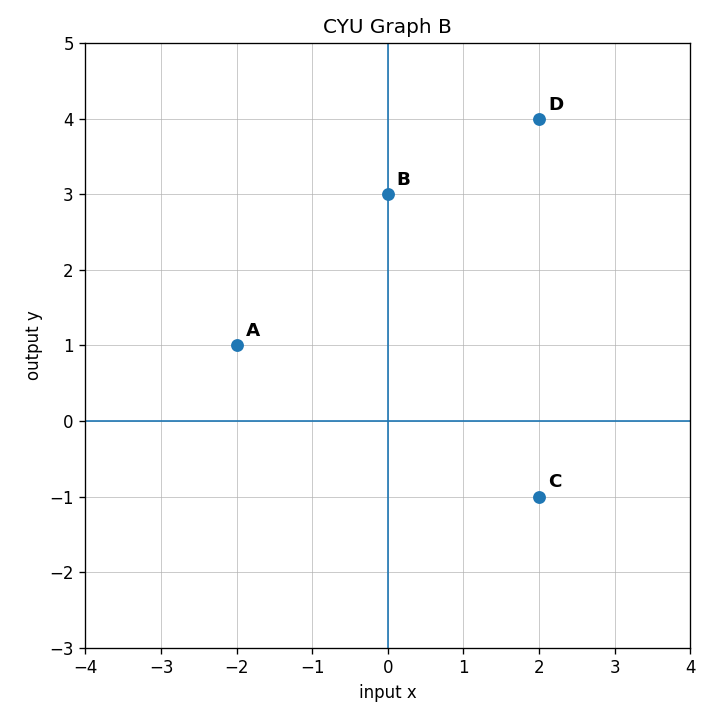

For $f(x)=4x-1$, find $f(3)$.
In $g(6)=17$, identify the input and the output.
Complete the table for $h(x)=2x+4$.
| $x$ | -2 | 0 | 5 |
|---|---|---|---|
| $h(x)$ |
The output of Machine A becomes the input of Machine B. Find the final output.
Is the table a function? Explain.
| Input | -1 | 0 | 2 | 2 |
|---|---|---|---|---|
| Output | 4 | 7 | 8 | 8 |
Use CYU Graph B. Is the relationship a function? Justify your answer.

A student evaluates $q(x)=x^2-5$ at $x=-4$ and gets $-21$. Find and correct the error.
Create a table with four input-output pairs that is a function but has at least one repeated output. Explain why it is still a function.